OMNICHANNEL SOLUTION STARTER PACKAGE - USER GUIDE FOR MAGENTO 1
INTRODUCTION
Having seamless integration between POS (Point of Sale) and Inventory Management brings huge benefits to retailers. Magestore understand this issue deeply. Hence, in our continuous effort to give the best to e-commerce businesses, we offer you an [Omnichannel Solution] (https://www.magestore.com/omnichannel-retail) - Starter package for Magento 1. This product is tailor-made for online-to-offline retailers with one single warehouse which includes 2 essential functions i.e. POS and In-stock Management.
In this detailed user guide, we’re glad to show you how to use and take advantage of this product. With the latest upgraded version, we hope that you will enjoy and greatly benefit from our solution.
HOW TO CONFIGURE
Inventory
Stock Control Configuration
Path: Inventory Management > Settings > Stock Control Configuration

-
Link warehouses to Magento front store view: In managing a Warehouse, you can link Warehouse to a Front Store View (path: Stock Listing > Warehouses > Click View > Warehouse Information section > General Information tab > Magento Store View field). Note that you can link a warehouse to one or multiple store views.
-
If you enable Link warehouse to Magento Front Store View by choosing Yes here, stock in warehouse will be displayed on the linked store view. When customers buy on this store view, stock quantity will be deducted from this linked warehouse.
-
If choose No, stocks in all warehouses will be shown on the store view.
-
Adjust Stock by entering the change qty:
-
if you choose Yes, when you enter the difference quantity (either a positive or negative figure), the system will calculate the final balance in warehouse by adding/ subtracting the entered value.
-
If you choose No, you need to enter the exact quantity of stock in warehouse and the system will recognize this figure as the latest available quantity of product.
-
Click Save Config to finish
Inventory Option
Stock Options
Path: System > Configuration > Catalog section > Inventory > Stock Options
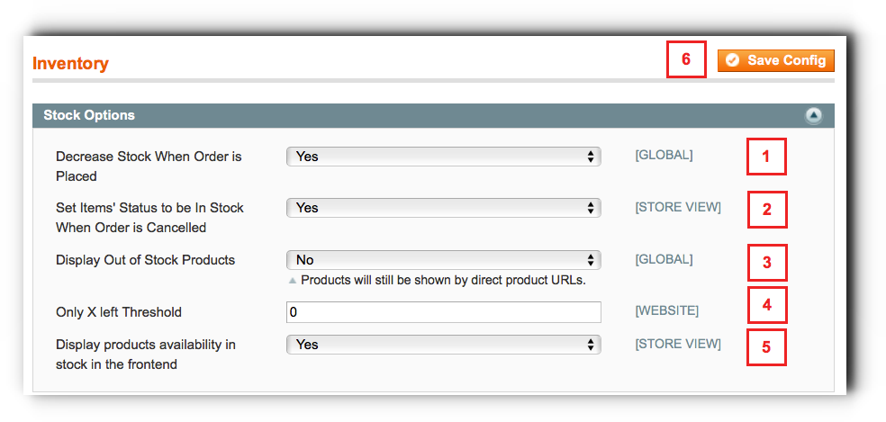
- Decrease Stock When Order is Placed: Select Yes in the dropdown list to adjust the quantity on hand when an order is placed.
- Set Items’ Status to be In Stock When Order is Cancelled: Select Yes in the dropdown list to return items to stock if an order is cancelled.
- Display Out of Stock Products: Select Yes in the dropdown list to display products in the catalogue that are no longer in stock.
- Only X left Threshold: Enter the number in the blank to display the message: Only x left on website when the quantity in stock reaches the threshold.
- Display products availability in stock in the frontend: Select Yes in dropdown list to display an In Stock or Out of Stock message on the product page.
- Tap Save Config to finish
Product Stock Options
Path: System > Configuration section > Catalog > Inventory > Product Stock Options

-
Manage Stock: Select Yes to activate inventory control for your catalog.
-
Backorders: Backorder is an order for a product that is temporarily out of stock with the supplier. Set Backorders to one of the following status:
-
No Backorders: To reject backorders when product is out of stock.
-
Allow Qty. Below 0: To accept backorders when the quantity falls below zero.
-
Allow Qty. Below 0 and Notify Customer: To accept backorders when the quantity falls below zero, and notify the customer that the order can still be placed.
-
Maximum Qty Allowed in Shopping Cart: Enter the Maximum Qty. allowed in Shopping Cart
-
Qty for Item’s Status to Become Out of Stock: Enter the quantity for Item's Status to become out of stock.
-
Minimum Qty Allowed in Shopping Cart: Enter the Minimum quantity allowed in Shopping Cart.
Next,

-
Notify for Quantity Below: Enter the stock level that generates notification showing the item is out of stock.
-
Enable Qty Increments: Select Yes to activate quantity increments for the product. Then in the Qty. Increments field, enter the number of the items that must be purchased to meet the requirement mentioned above.
-
Automatically Return Credit Memo Item to Stock: Select Yes to return the item to inventory by default when a credit memo is issued for the item.
Finally, click on Save Config to save changes.
Web POS
Add New POS and Assign it to Cashier
Create New POS
Path: from Magento backend > Sales > Web POS section > Manage POS
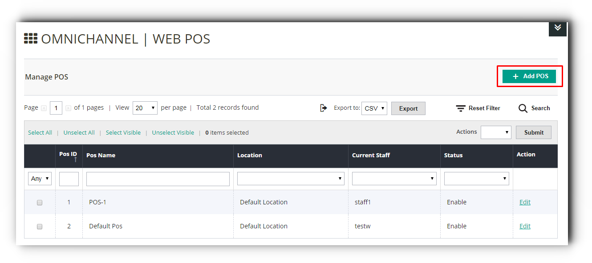
Click on Add POS button, then you will be linked to the New POS site
There are 3 tabs to manage: POS Information, Closed Session, Current Sessions Detail
• Pos information
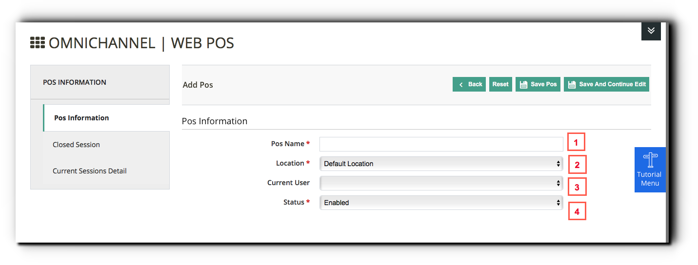
- Pos Name: POS’s Name
- Location: POS’s location. Note that multiple POS can link to one location. Here, admin can choose location created and mapped to Warehouse. As a result, admin can control both Warehouse and Location easily.
- Current User: User is working on POS
- Status: users can Enable or Disable this POS
• Closed Session

This section will display the statistics of Closed Session after staff working days like this picture above
• Current Sessions Detail:
This section will show users detailed statistic of Current Session such as Opening Balance (the amount of money when staffs started their shifts), Theoretical Closing Balance, Real Closing Balance…
But with the brand new POS, no data is available to display.
Assign New POS to Cashier
Path: Sales > Web POS section > Web POS Permission > POS Users

Here you can assign several POS to a staff
Manage POS Users & POS Roles
Decentralize POS Users
Path: from Magento backend > Sales > WebPOS > Web POS Permissions > POS Users
Edit existing POS Users

Users can click on Edit to view and change the POS users’ data. Then, 2 sections will be displayed which are User Information and User Settings
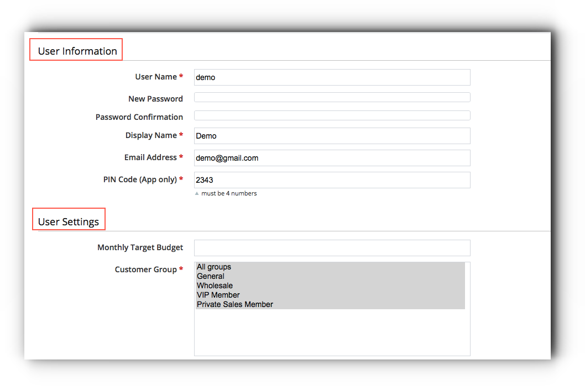
• User Information
In this field, users can change user name, password, display name, email address as well as PIN code required when staffs opened new session.
• User Settings

- Monthly Target Budget: KPI each month for this user
- Customer Group: admin can select among those choices
- Locations: choose the place where this staff is working
- POS: the POS which this staff is working with
- Role: Position of this staff
- Status: admin selects Enable to activate this staff account on system or selects Disable to prevent him/her from accessing POS
Add New POS Users

Click Add User on the right side of the screen.
2 sections, which are User information and User settings, will be displayed for admin to fill in data – the same as when you Edit an Existing POS User above.
Decentralize User Roles
Path: Sales > WebPOS section > Web POS Permission > For Roles
Edit and Adjust Existing Roles on System
After following this path, a home screen listed different roles on system will be appear like the picture below

For example, in this picture, the only one role being active on the system is admin.
Click on Edit under Action column to change the decentralization for this role.
After clicking on Edit, you can edit user role in 2 tabs: Role information and User list

• Role Information tab
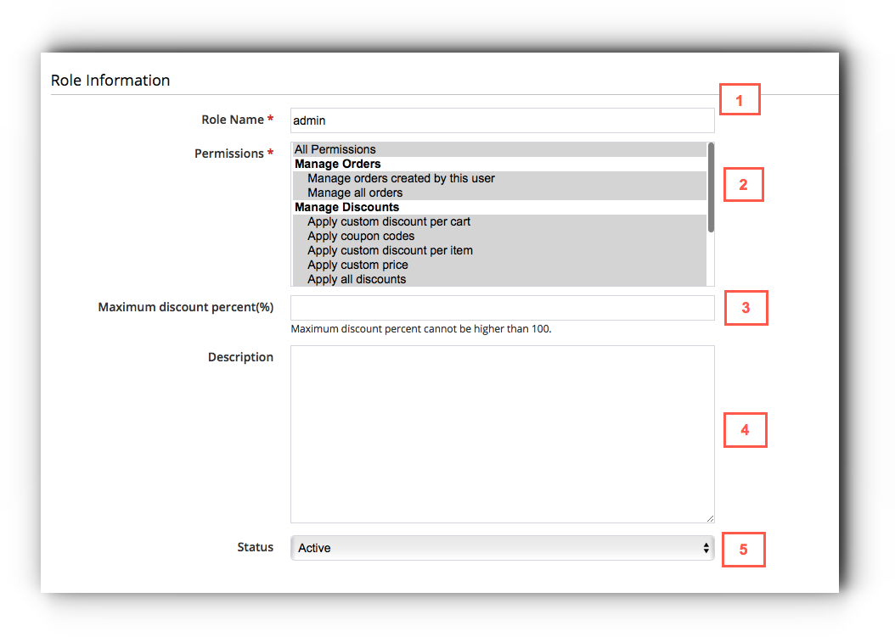
- Role Name: you could change the name of role if it were essential
- Permissions: Click to decentralize permission for this role. Hold Shift + Click to select multiple.
- Maximum discount percent: the highest rate of discount which this role could apply for customers.
- Description: this field is optional. You can write some words to help your staffs know more about position description
- Status: Select Active to active this role or select Inactive to limit all the permissions you set.
• User List tab
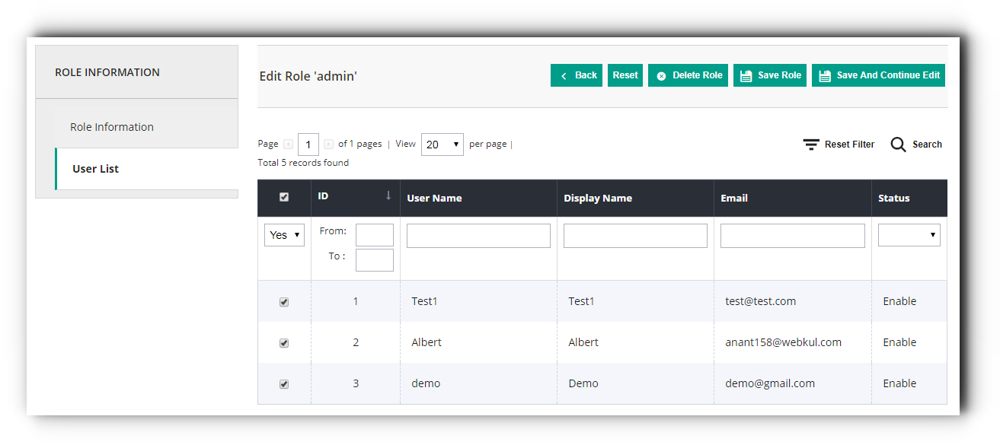
The list of users on the system who have this role
For example, as we can see on the screenshot, user names Test1, Albert & Demo have the same role as admin on this system.
Add New Role On System

Click on Add Role button. Then, fill in the role’s information in Role Information tab just like above. Then click Save Role to apply the changes.
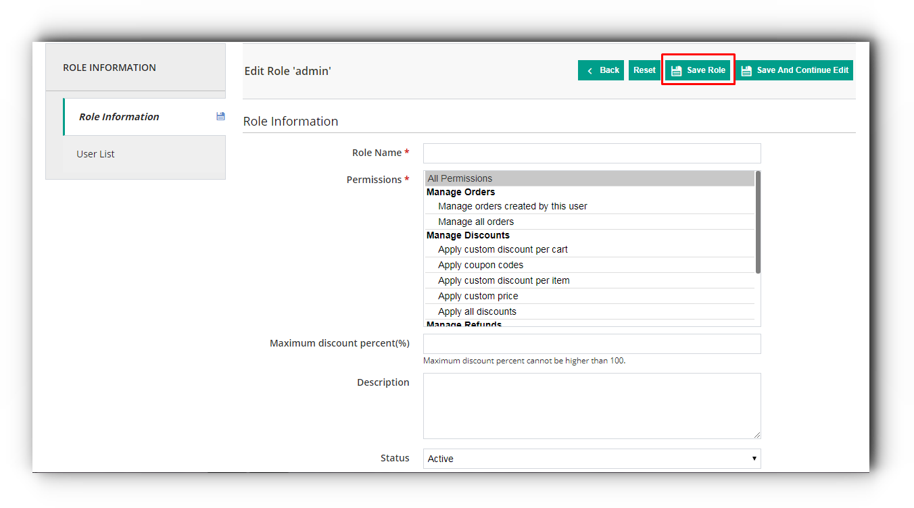
Differentiate Access Permission
Path: Sales > Web POS section > Web POS Permission > POS Roles
Please refer to Decentralize User Roles for detailed instruction.
General Settings

-
Web POS Logo: Upload your own logo here. Notice that the recommended size is 250x250px and supported files are jpg, png.
-
Web POS Color: Users can choose any colors they like and adjust them freely
-
Enable Delivery Date: displays a field allowing cashier can input the date when customers receive products
-
Allow to sync orders of out-of-stock items: Choose between Yes or No
-
Session Timeout: After this period of time, users need to log in again to continue using POS account (please input the time in second)
-
Intergrate with Pole Display device: Choose Yes or No.
-
Need to confirm before deleting order (App only): This setting is only applicable for RetailerPOS – our POS version for ipad/tablet. Choose Yes or No
-
Need to create session before working: Select Yes or No. Sessions helps users manage process better when requiring input the amount of cash at the beginning or in the end of session.
-
Active key for using App: This setting is only applicable for RetailerPOS where you can enter the key to start using RetailerPOS
Default Guest Checkout
Path: Sales > Web POS section > Settings > Default Guest Checkout
Default customer contains information that is used for Guest Checkout or when customer information is not enough, default input data will be filled automatically.

Fill in those fields which you want to use as default data such as First Name, Last Name, Street, Country, State/Province, City, Zip Code, Telephone or email.
After filling in, don’t forget to click Save Config button to save your changes
Enable Payment Method
Path: Sales > Web POS section > Settings > Payment for POS
There are 3 sections to configure: The first one is General Payment Setting and others are Integration (for RetailerPOS App – our POS version for ipad/tablet only which you can skip for this Starter package)

• General Payment Setting 1. Applicabale Payments: users can select Allowed all payment methods or Specific Payments. The latter selection means that your system will only accept some methods which are listed in the field Specific Payments below 2. Specific Payments: users can choose among those choices such as Cash On Delivery, Cash In, Credit Card. Hold Shift + Click to select more than one method. These options are only available here when you enable them in System > Configuration > Sales section > Payment Method 3. Default Payment Method: select the option that will appear automatically in the field of payment method when cashiers checkout for customers.
• Paypal Integration (App only) and Authorizenet Integration (App only): include settings for Paypal, Stripe or Vantiv for RetailerPOS App – our POS version for ipad/tablet only which you can skip for this Starter package

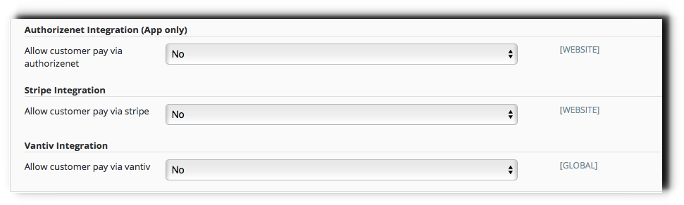
Set up Shipping Method
Path: Sales > Web POS section > Settings > Shipping for POS

• Offiline Shipping Methods: users can choose among those options: Flat Rate, Free Shipping, Custom Method. These options are only available here when you enable them in System > Configuration > Sales section > Shipping Method • Default Shipping Method: Choose the shipping method that you would want to set as default payment method during checkout WebPOS.
Configure Product Search
Path: Sales > Web POS section > Settings > Product Search
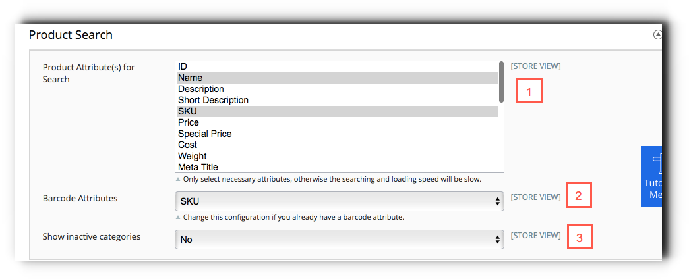
- Product Attributes for Search: Select attributes by which you want to search products. The default attributes are Name and SKU. Users can choose among those selections. Hold Shift +Click to select more than one
- Barcode Attributes: Choose SKU to search products quickly (only applicable if you have a barcode attribute which you can skip in this Starter Package).
- Show inactive categories: Select Yes or No to display inactive categories in WebPOS frontend.
Set Up Default Email
This configuration includes 4 types of email relating to 4 different process i.e. Orders, Invoices, Shipments and Credit Memos

This section of configuration allows you to send customers automatic email to confirm orders, receive invoices, confirm shipment as well as credit memos.
Receipt Printing Configuration
There are 3 parts to configure which are: General, Content, Optional Fields
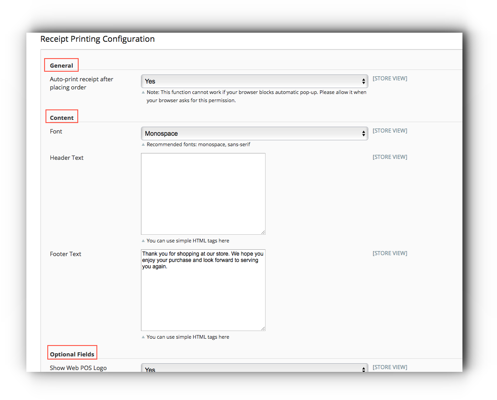
-
General: users can select Yes or No to active the function which is printing automatically receipt after an order is successfully placed.
-
Content: here you can customize the content of the receipt.
- Users can choose default font of text
- Header Text: Please fill in the content which you want to appear in the heading section
-
Footer Text: Type the content which you want to appear in the footer section
-
Optional Fields
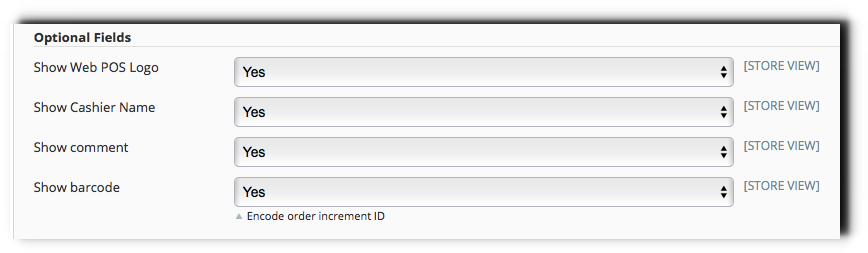
Users can select between Yes or No to show those items such as Web Pos Logo, Cashier Name, Comment or Barcode.
How Web POS works with Peripheral Device
Magestore Web POS module can connect with Barcode Readers, Card Swipers and Receive Printers
- Barcode Readers: are any devices which can connect with Ipad/Laptop/PC (including USB Port, Wifi or Bluetooth). The scanner reads barcodes and fill encoded information into Web POS search box
- Card Swipers: only devices connected through USB port (Supports Authorize.Net & Stripe)
- Receive Printers: any devices connecting with Ipad/Laptop/PC
HOW TO MANAGE USER PERMISSION
Note: Only admin accessing Web POS can set up Staff permission
How to manage User Roles and Users
Note: Users are the one who get permission to access in the Backend
Decentralize User Roles
Path: System > Permission section > Roles
Manage user role
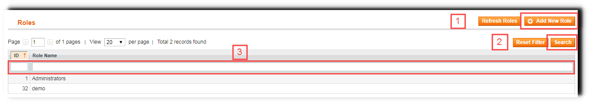
-
Click Add New Role to create new user role.
-
Fill out the blank with a value to search, after click Search.
-
Search user role information with keyword.
View or edit a role’s detail by clicking on each line.
Create a new user role
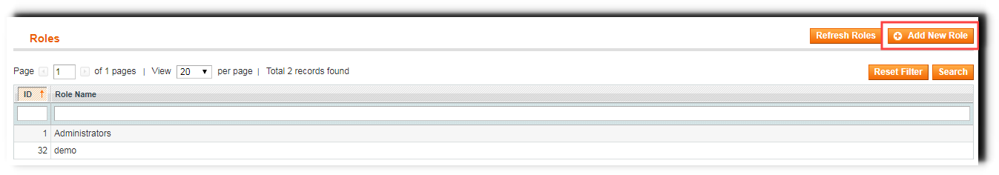
Click Add New Role

In tab Role Info, fill in all required fields including role name and admin password.

In tab Role Resources:
- Resource Access: You can choose Custom or All. Choose All if you want users having this role will have access to all resources, click on Save or Save And Continue Edit button to save your work.
- If you choose Custom, you can tick to assign specific permissions for that role.
- Click Save to complete the process.
Decentralize Users
Path: System > Permission section > Users
Manage user

- Click Add New User to create new user.
- Fill out the blank with a value to search
- Click on Search button to search user information with keyword.
View or edit a user’s detail by clicking on each line.
Create a new user

To create new user, click Add New User
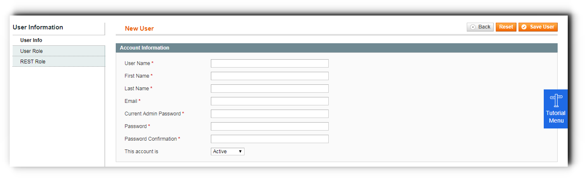
In tab User Info, fill in the required information.
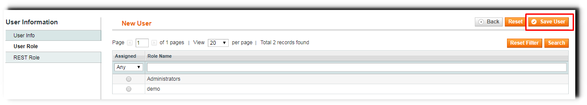
In tab User Role, select a role for user. Then click Save User to complete the process
How to manage POS staff
Decentralize access permission of Web POS users
Path: Sales > Web POS section > Web POS Permissions > POS Roles
Manage role
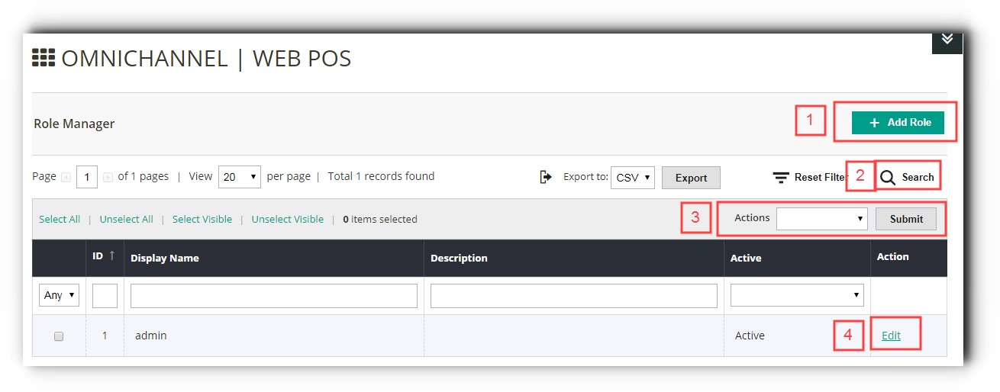
- Add Role: Click to add a new role.
- Search: You can find role information by click it and fill out values.
- Action: If you want to delete a role record, you need choose a role, then select Delete option and click Submit.
- Edit: You can view role’s details (edit) by click Edit.
Add a new role
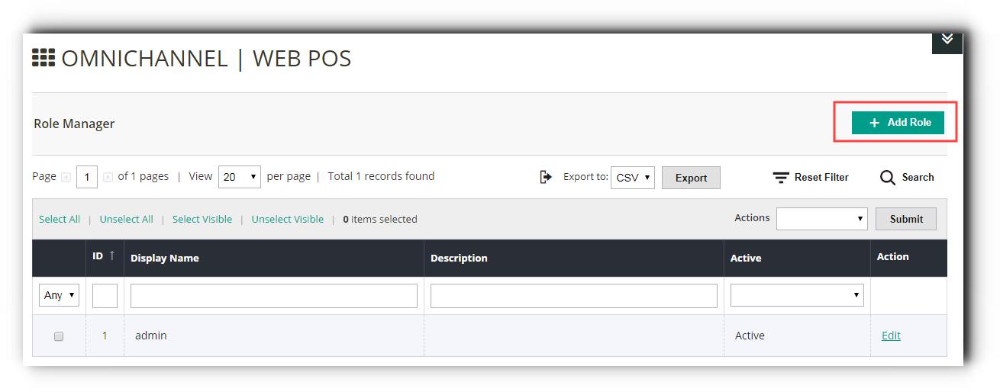
Click Add Role to add a new role.

In Role Information tab, fill out the blank.
- Role Name: Enter a name for the role. (required)
- Permissions: Choose All Permissions if you want the user to have access to all resources. Or select a specific role. Hold Ctrl + Click to select multiple.
- Maximum discount percent (%): Limit the highest discount percent that each user role can offer customers.
- Description: Enter text that describes the role.
- Status: select Active to activate this role.
Then, click on Save Role or Save and Continue Edit to save your changes.
Decentralize POS user
Manage User
Path: Sales > Web POS section > WebPOS Permissions > POS Users
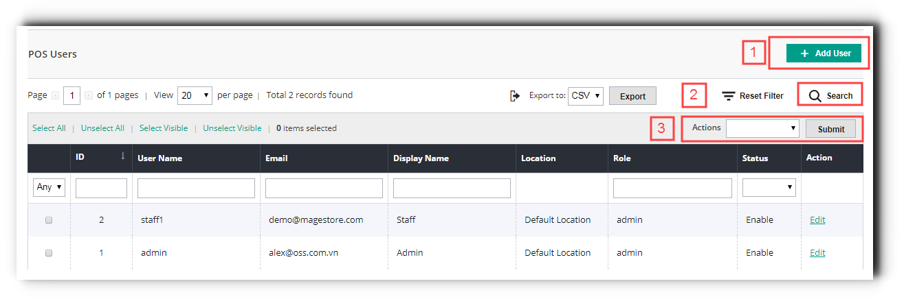
- Click Add User to create a new user.
- Click Filters to search user information.
- If you want to Delete or Change status a staff, first select a staff, then choose Delete or Change status and click Submit.
Click Edit under Action column to view a staff’s details or edit.
Create a new user
Path: Sales > Web POS section > WebPOS Permissions > POS Users
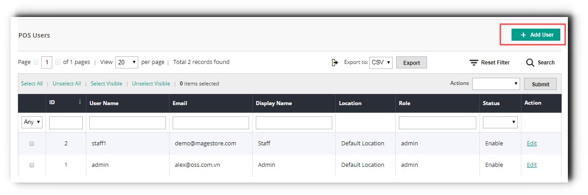
Click Add User.
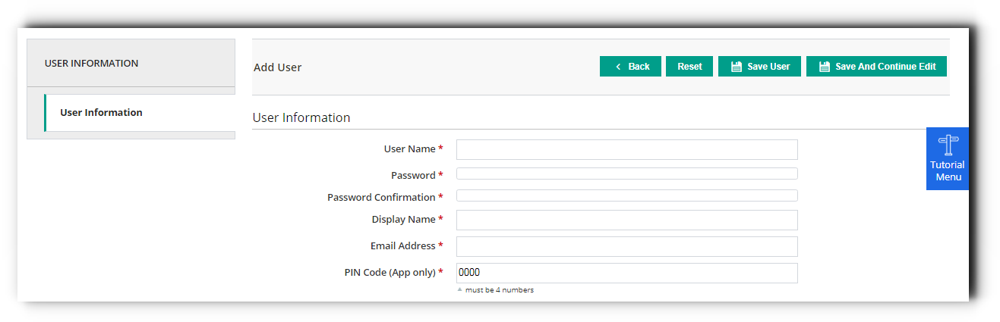
Fill out all the required fields including: User Name, Password, Password Confirmation, Display Name, Email Address. The PIN Code (App only) setting is only applicable to RetailerPOS – our POS version for ipad/tablet which you can skip in this Starter package user guide.

- Monthly Target Budget: set the monthly target for the user
- Customer Group: choose the group for the customer from the list
- Location: Assign a Location for the user.
- POS: Assign POS for the user.
- Role: choose the user’s role
- Status: You can Enabled or Disabled this staff.
Finally, click Save to complete the process.
HOW TO MANAGE MASTER DATA
Product
Attribute
Path: Catalog > Attributes section > Manage Attributes
Manage Attribute

- Click Add New Attribute to create new user.
- Number of products to be display per page
- Search attribute information with keyword.
You can view or edit attribute’s details by clicking on each line
Create A New Attribute
Attributes can be created while working on a product, or from the Product Attributes pages. The following example shows how to create attributes from the Stores menu. Any attribute that is used as a drop-down list of values for a configurable product must have the following properties:
| Property | Value |
|---|---|
| Catalog Input Type for Store Owner | Dropdown |
| Scope | Global |
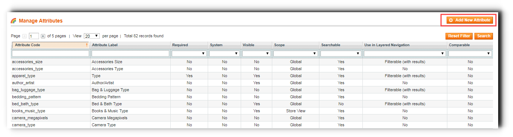
Click Add New Attribute
Properties tab:
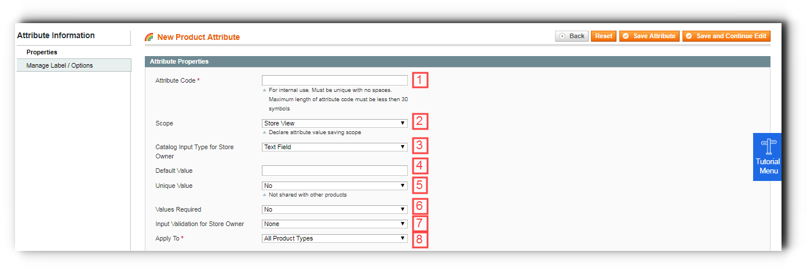
• Attributes Properties
- Enter a unique Attribute Code in lowercase characters, and without space
- Set Scope to indicate where in your store system the attribute can be used
- Set Catalog Input Type for Store Owner to the type in input control to be used for data entry
- Enter a Default Label to identify the attribute
- If you want to prevent duplicate values from being entered, set Unique Value to Yes
- Select Yes to require the customer choose an attribute value option
- To run a validity test of any data entered in the text field, set Input Validation for Store Owner to the type of data that the field should contain. This field is not available for input types with values that are selected. The test can validate any of the following:
- Decimal Number
- Integer Number
- URL
- Letters
- Letters (a-z, A-Z) or Numbers (0-9)
- Select if the attribute setting is applied to all product types or only selected type(s). Hold Ctrl + Click to select multiple
• Storefront Properties
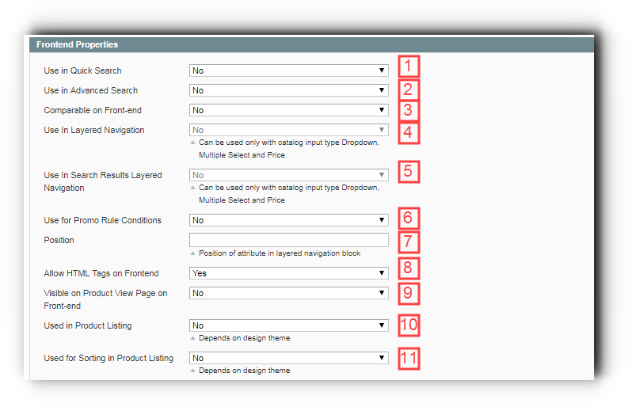
- If the attribute is to be available for search on website, set Use in Quick Search to Yes
- If the attribute is to be available for advanced search tool on website, set Use in Advanced Search to Yes
- To include the attribute in Product Compare, set Comparable on Frontend to Yes
For dropdown, multiple select and price fields, do the following:
- To use the attribute as a filter in layered navigation, set Use in Layered Navigation to Yes
- To use the attribute in layered navigation on search results pages, set Use in Search Results Layered Navigation to Yes
- Set Use for Promo Rule Conditions to Yes to use the attribute in price rule.
- In the Position field, enter a number to indicate the relative position of the attribute in the layered navigation block.
- To allow the text to be formatted with HTML, set Allow HTML Tags on Frontend to Yes. This setting makes the WYSIWYG editor available for the field.
- To include the attribute in catalog page listings, set Visible on Catalog Pages on Storefront to Yes
- Complete the following settings if supported by your theme:
- To include the attribute in product listings, set Used in Product Listing to Yes
- To use attribute as a sort parameter for product listings, set Used for Sorting in Product Listing to Yes
Manage Labels / Options

In tab Manage Labels: Enter a Title to be used as a label for the field. If your store is available in different languages, you can enter a translated title for each view.
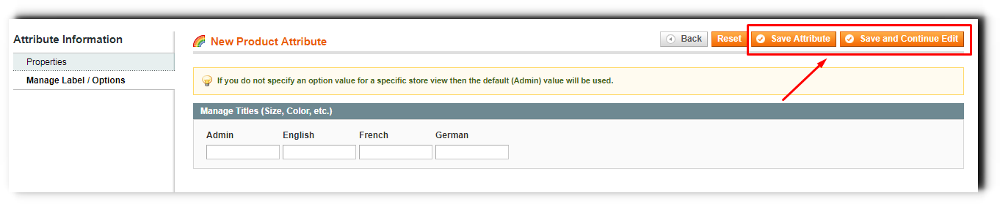
When complete, click Save Attribute or Save and Continue Edit.
Attribute Set
Path: Catalog > Attributes section > Manage Attribute Sets
Manage Attribute Set
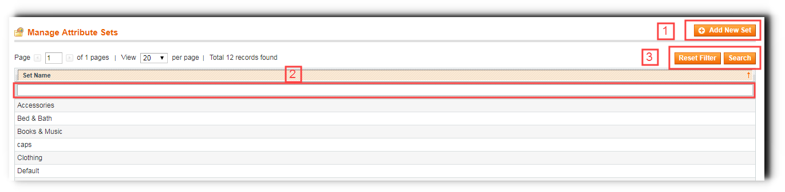
- Click Add New Set to create new attribute set.
- Fill out the blank with a value to search,.
- Click Search to start your search or clear the filter field.
You can view or edit details of attribute set by clicking on each line.
Create A New Attribute Set
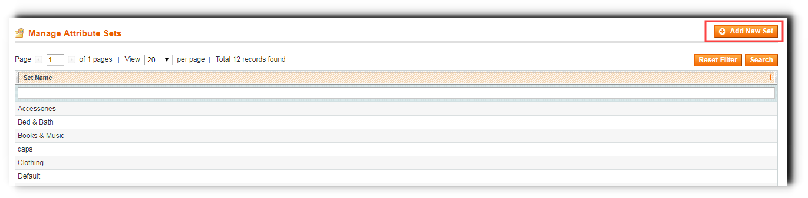
Click Add New Set button to create new attribute set.
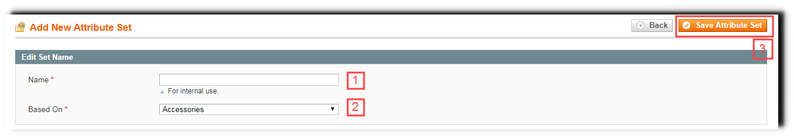
- In the Name field, enter a name for the attribute set (required)
- In the Based On field, select an existing attribute set to be used as a template:
- Bag
- Bottom
- Default
- Downloadable
- Gear
- Sprite Static Ball
- Sprite Yoga Strap
-
Top
-
Click Save Attribute Set button and continue

To add a new attribute to the set, drag the attribute from the Unassigned Attribute list to the appropriate folder in the General group.
Click Save Attribute Set to complete the process.
Categories
Path: Catalog > Manage Categories
Manage Categories
When selecting a category on the left, all the information will be displayed on the left.
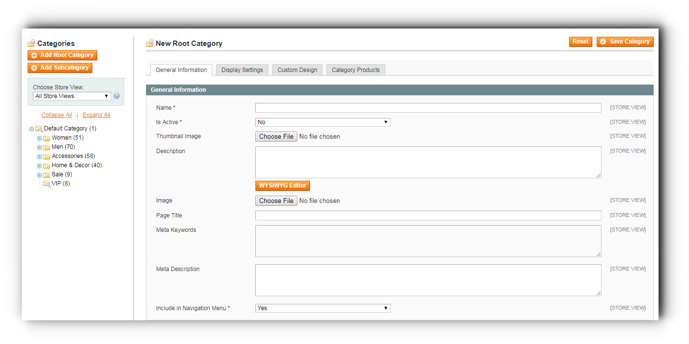
Create A New Category
Path: Catalog > Manage Categories
Set Store View to determine where the new category is to be available. In the category tree, tap the parent category of the new category.
If you’re starting without any data, there might be only Default Category, which is the root.
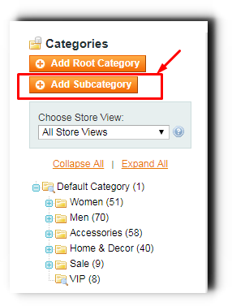
Click Add Sub-category to add a new category.
• General Information tab
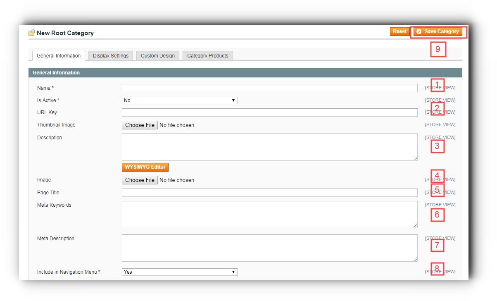
- Enter the Category Name
- If you want the category to be immediately available in the store, set Is Active to Yes
- , 4., 5., 6., 7. Enter SEO-related fields (optional)
- To include the category in the top navigation, set Include in Navigation Menu to Yes
- Click Save Category to finish
• Display Setting tab
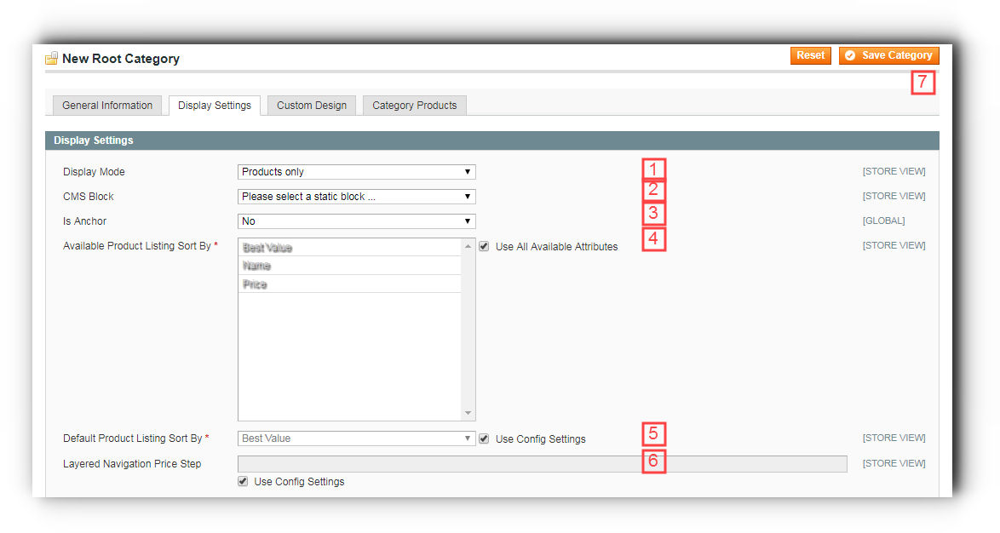
- Set Display Mode to one of the following:
- Products Only.
- Static Block Only.
-
Static Block and Products.
-
To include a content block on the category landing page, choose the CMS Block that you want to appear
- If you want the category page to include the Filter by Attribute section of layered navigation, set Anchor to the Yes position.
- To change the Available Product Listing Sort By options, do the following:
- Clear the Use All checkbox.
- Select one or more of the available values to be available for customers to sort the list. By default, all available values are included. For example, the values might include:
- Position.
- Product Name.
- Price 5.
- To set the default sort order for the category, check the Use config setting box.
- To change the default Layered navigation price step setting, do the following:
- Clear the Use Config Settings checkbox.
- Enter the value to be used as an incremental price step for layered navigation.
- Click Save Category to finish.
• Category Products tab

To find the products:
- Fill out the blank with a value.
- Click Search to find the products. To include a product in the category.
- Mark the checkbox of each product, in the first column.
- Click Save Category
Product Types
Path: Catalog > Manage Products
Product Types
| Product Types | Description |
|---|---|
| Simple Product | A simple product is a physical item with a single SKU. Simple products have a variety of pricing and of input controls which makes it possible to sell variations of the product. Simple products can be used in association with grouped, bundle, and configurable products |
| Configurable Product | A configurable product appears to be a single product with lists of options for each variation. However, each option represents a separate, simple product with a distinct SKU, which makes it possible to track inventory for each variation |
| Grouped Product | A grouped product presents multiple, standalone products as a group. You can offer variations of a single product, or group them for a promotion. The products can be purchased separately, or as a group |
| Virtual Product | Virtual products are not tangible products, and are typically used for products such as services, memberships, warranties, and subscriptions. Virtual products can be used in association with grouped and bundle products |
| Bundle Product | A bundle product let customers “build their own” from an as sort of options. The bundle could be a gift basket, computer, or any things else that can be customized. Each item in the bundle is a separate, standalone product |
| Downloadable Product | A digitally downloadable product that consists of one or more files that are downloaded. The files can reside on your server or be provided as URLs to any other server |
Manage Product
Path: Catalog > Manage Products

Workspace Controls
| Control | Description | | Add Product | Initiates the process to create a new simple product. To choose a specific product type, click the down arrow. Options: Simple Product, Configurable Product, Grouped Product, Virtual Product, Bundle Product, Downloadable Product | | Action | Lists all actions that can be applied to selected products in the list. To apply an action to a product or group of products, mark the check box in the first column of each product. Options: Delete, Change Status, Update Attributes | | Filters | Initiates a catalog search based on the current filters | | Edit | Opens the product in edit mode or view product’s detail. You can accomplish the same thing by clicking any where on the row |
Create A New Product

Click Add Product button at the top right of the page. You will be directed to the New Product page where you can select the Attribute Set and Product Type. Then click Continue to process.

Simple product
There are several tabs to complete information for the product. But only General, Prices and Inventory tabs have required information that you have to fill before continuing.
• General tab

Complete the required settings including Product Name, Description, Short Description, SKU, Weight, Status & Visibility.
NOTE: you need to choose Yes in Enable On WebPOS setting to display this product in WebPOS frontend.
Then, Click Save to continue.
• Prices tab: enter the product price and tax class (required)
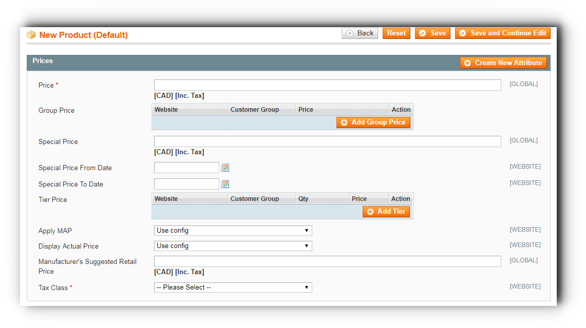
• Inventory tab: enter the Qty in stock of the product.

Scroll down and complete the information in the following sections as needed:

Configurable product

In the New Product page, choose Configurable Product.
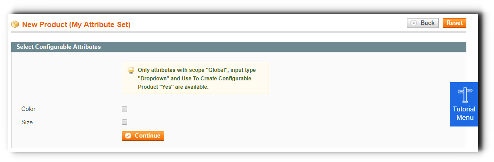
Select the Attribute(s) and click Continue.
Complete required information in General & Prices tabs just like Simple Product and click Save or Save and Continue Edit to continue. Fill information in other tabs if you want to.
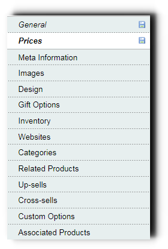
Adding configurations

After creating a product, go to Associated Products tab, you can use the Quick Simple Product Creation to add configurations for the product quickly and conveniently.
Grouped product

In the New Product page, choose Grouped Product.
Complete required information in General tab just like Simple Product and click Save or Save and Continue Edit to continue. Fill information in other tabs if you want to.
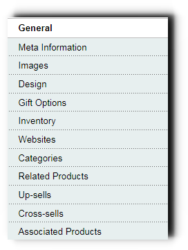
Add products to Group
Tap on Associated Products at the bottom of the left menu to add products to group
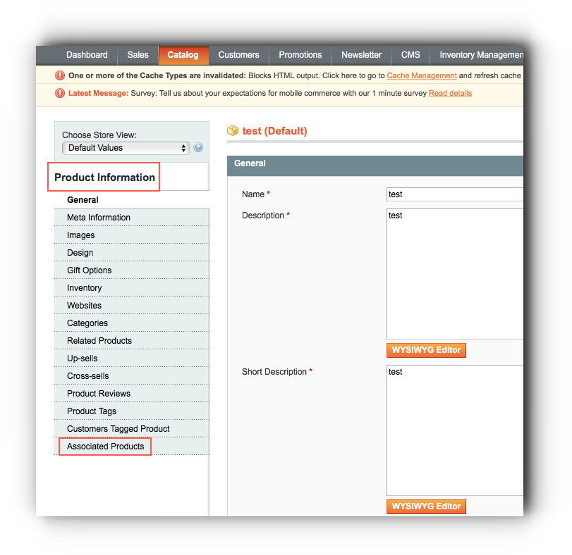
A list of products will be displayed on the screen, users just need to click on them to add them to a specific group

And don’t forget to tap on Save and continue edit button at the right side of the screen to save your configuration
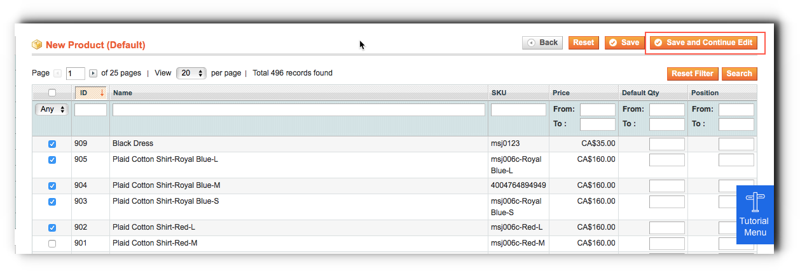
Virtual product
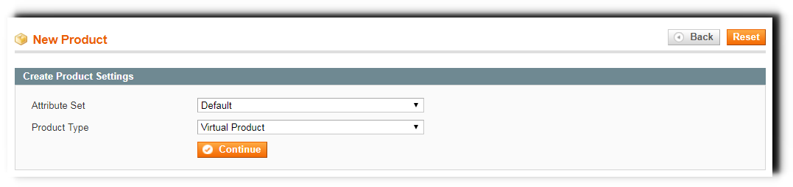
Aside from the absence of the Weight field, the process of creating a virtual product and a simple product is the same.
Bundle product
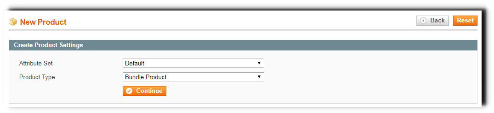
In the New Product page, choose Bundle Product.
And then, the screen will be displayed like the screenshot below:
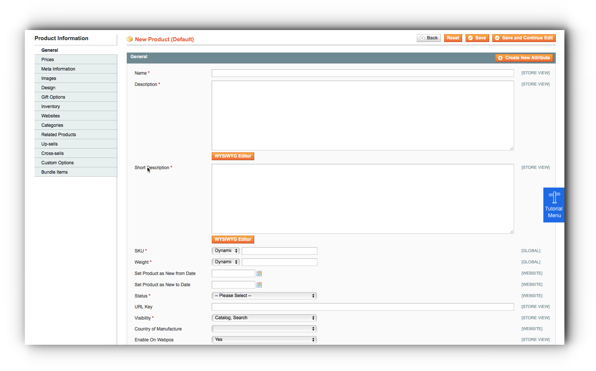
There are many sections for users to enter product information on the left side of the screen:
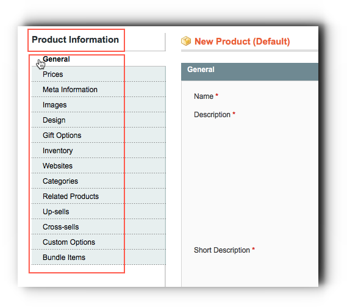
In total, there are 14 sections for users to fill in such as General, Prices, Meta Information, Images, Design, Gift Options, Inventory, Websites, Categories, Ralated Products, Up-sells, Cross-sells, Custom Options and Bundle Items
And each section will be divided into several fields for users to fill in. Enter data for all of them to complete basic settings.
Add Bundle items
In the left menu of the New Product page for Bundle Product, go to Bundle Items tab.
To configure shipment method for bundle items, select between 2 options which are: separately or together

Click Add New Option

Then, the screen will be displayed like the screenshot below:

- Default Title to be used field label.
- Set Input Type to one of the following:
- Drop-down.
- Radio buttons.
- Checkbox.
- Multiple Select.
- Choose between Yes or No to make the field a required entry.
- Tap the orange button Add Selection, then mark the checkbox of each product that you want to include in this option.
Mark the checkbox of each product to choose

Click Add Selected Product(s) to Option, you will see.
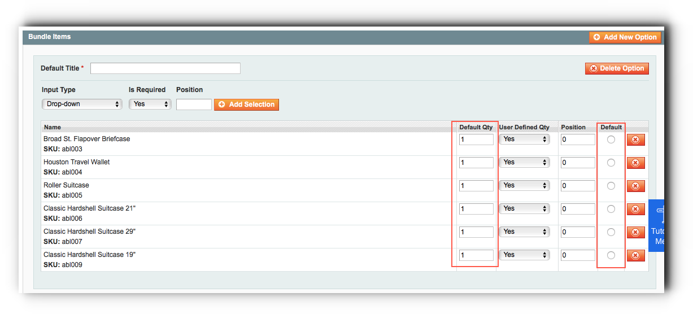
- Mark the checkbox of a product that you want it is default.
- Enter Default Quantity.
Finally, click Save.
Downloadable product
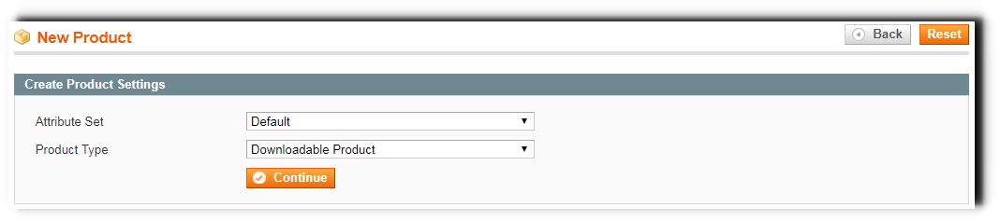
In the New Product page, choose Downloadable Product.
You will be directed to a page with 14 sections for you to enter product data such as General, Prices, Meta Information, Images, Design, Gift Options, Inventory, Websites, Categories, Related Products, Up-sells, Cross-sells, Custom Options and Downloadable Information.
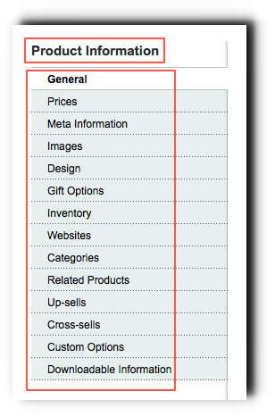
In General section, the screen will be displayed like this:

Complete the required setting Enter Product Name. (required) Fill in the Description and Short Description for products The default SKU that is based on the product name, or enter another Set Date for product To set Status: Please choose between Enable or Disable Type in URL Key (optional) Choose Visibility for products To Enable on Webpos, choose between Yes or No
Finally, don’t forget to click Save to continue.
Add Downloadable Package
In Downloadable Information Section, there are 2 parts for users to fill in: Samples and Links

To complete the Samples section:
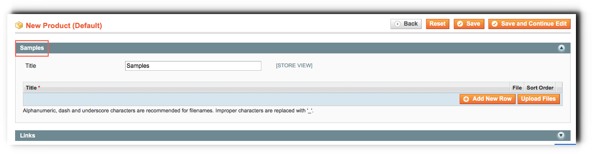
- Enter the Title - to use as a heading for the samples.
- To enter the Title of the individual sample:
Tap on the orange button Add New Row and then choose between Upload file or paste the URL. Or users can tap on Add New Row button to add more samples. When completed, click Save.

And then, the other part is Links.

- Enter the Title - to use as a heading for the download links.
- Enable the function Links can be purchased separately by choosing Yes. If not, choose No
- Click Add New Row, then:
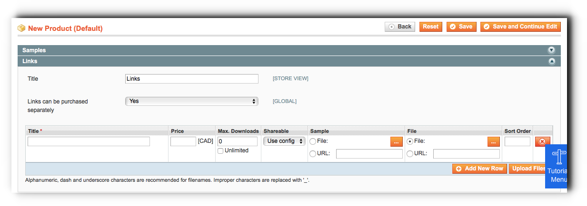
Enter Title and Price. For both File and Sample files, choose:
- Upload File: To upload the file to the server. Browse the file, and select it for upload.
- URL: To access the distribution file from a URL. Enter the full URL to the download file.
Product Setting
a. Content
Path: Catalog > Manage Product
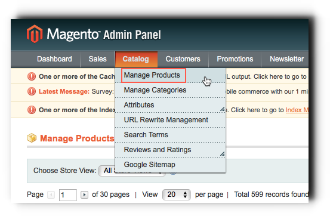
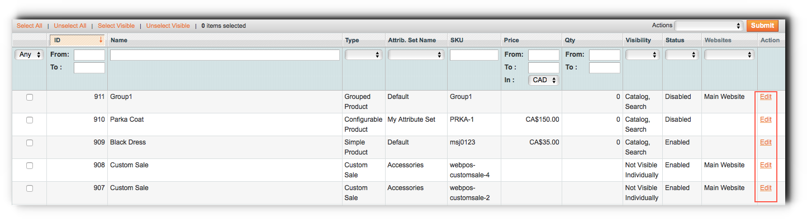
Click Edit under Action column to edit information of a product. You can quickly enter content into the blank fields or click on WYSWYG Edit button to use a more customizable editor tool.


b. Images
Choose section Images on the list of Product Information
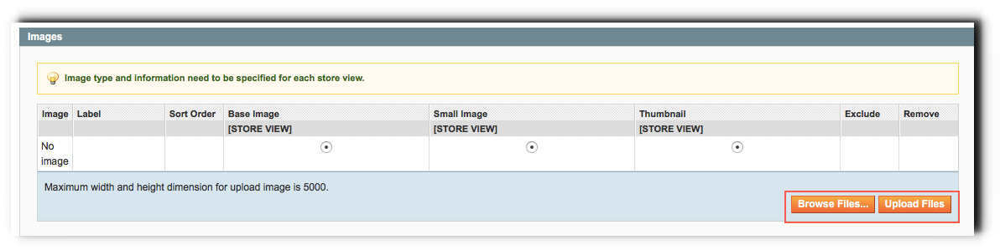
Tap on Browser Files or Upload Files to add images
c. Search Engine Optimization
This part is in the section Meta Information on the Product Information menu on the left.
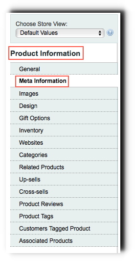

d. Related Products, Up-sells and Cross-sells
These 3 sections are on the Product Information menu on the left side of the screen.

And then, click to add any specific product to one of Related Products, Up-sells or Cross-sells
Finally, don’t forget to tap on Save button to maintain your adjustment.
e. Gift Option
Path: Catalog > Manage Products > Product Information left menu > Gift Options


Users can enable the function of Allow Gift Massage or Allow Gift Wrapping by choosing Yes or No option.
Customer
Path: Customers > Manage customers
Manage Customer

- Click Add New Customer to create new customer.
- Fill out key word to search customer information.
Create New Customer
Click Add New Customer.
And then the screen will display 2 sections for users to edit: Account Information and Address

a. Account Information section:
Users need to collect customer information to fill in those fileds.

b. Addresses section:

Users could base on the history database or fill in the brand new address for customers.
After fill in all required fields, tap on button Save to maintain all changes or adjustments.
Warehouse
Path: Inventory Management > Stock Listing section > Warehouse
Please refer to Section Warehouse for details.
Location
Path: Sales > Web POS section > Manage Locations

To add new location, tap on the green button Add Location
A screen allowing customers to fill in general information will be displayed automatically
On the pop-up screen: Fill in the Location Name (required) Fill in the location Address field (required) Fill in the location Description field Choose the Warehouse. - If you already assign another location to your Primary Warehouse, you won’t be able to assign it again here. - If you want to assign a new location to your Primary Warehouse, you need to Edit this field of the currently assigned warehouse to Don’t link to any Warehouses, then come back to the new location that you wish to assign and assign it to Primary Warehouse.
- Click on Save
To edit information for an existing location, tap on the blue underlined Edit and then a screen which are as same as the screen above will be displayed.

Store (POS)
Path: Sales > Web POS section > Manage POS

Create A New Web POS
Tap on the green button Add POS to create new one.
There are 3 parts which are POS information, Closed Session and Currrent Session Detail.
In terms of creating new Web POS, users need to fill in section POS information only.

POS Information tab:

Fill out or select all the re quired fields.
-
POS Name: POS’s name. (re quired)
-
Location: POS’s location. (required). Here, admin can choose the location created and mapped to Warehouse. So that, the admin can control both warehouse and location easily.
-
Status: you Enable or Disable this POS
After all, tap Save POS to maintain recent adjustment.
Note: Even when you set the warehouse to a certain location, with online store, admin can see clearly warehouse information in any location. HOWEVER, with offline store, only Sales Manager can view the warehouse information only in the mapped location. IT Admin can give other admin permission to view the Inventory information in any location by going to System > User Roles > Add new role or Edit role > Role Resource
Manage Web POS
Path: Sale > Web POS section > Manage POS

- Click Add POS to create new POS.
- Click Filters to search POS information.
- If you want to delete a POS, first select a POS, then click Actions: choose Delete.
- Click Edit to view a POS’s details or edit
HOW TO USE
HOW TO USE INSTOCK MANAGEMENT MODULE
Stock listing
Stocks in Warehouse
Path: Inventory Management > Stock Listing section > Stocks in Warehouse
Admin can have overview of Stock in the Warehouse and view stock details within the warehouse. These details include Available Qty, Qty to Ship and Total Qty and Shelf Location of each product in the warehouse.

You can easily edit Qty of products in-line within a few steps:
- Mark the checkbox to select products
- Qty in Warehouse(s): Edit product quantity in line
- Shelf Location: Input product location in the physical warehouse
- Click on Update Stock to save changes
Non-Warehouse Products
Path: Inventory Management > Stock Listing section > Non-Warehouse Products
When a product is newly created and not assigned to any warehouse yet, it will be automatically allocated in Non-warehouse.

From here admin can:
- Select the product by clicking on the checkbox
- In Actions menu, add it into warehouse by clicking on its Add to Warehouse from the drop-down list
- Click Submit to confirm and the product is added to the Primary Warehouse
Warehouse
Path: Inventory Management > Stock Listing section > Warehouses
After installation, the system will automatically provide a Primary Warehouse. This warehouse cannot be deleted and can only be edited. All the existing products with stocks level of your website will be automatically allocated in this warehouse.
a. Warehouse information
The Warehouse menu allows you to control your warehouse with 6 tabs:

- General information about the Warehouse: records basic details of the warehouse such as Name, Code, Contact Email, Address, etc. If you enable the Link warehouse to Magento front store view setting above, this is where you can select the warehouse’s linked front store.
- Stock On Hand displays the amount of goods that the warehouse has available at that time. Here, you can update each product’s Qty in Warehouse(s) and its Shelf Location in-line. Click on Export to transfer the information as an excel file or CSV file to your device.
- Stock Movement shows the changes in stock quantities. Click on each record to view more details. Information includes added/ subtracted quantity, product SKU, movement type, movement date and reference number to access further details by a click.
- Warehouse Permissions manages staff access to the warehouse. Detailed guide is given in the next section Warehouse permissions
- Orders records detailed information of each order to the warehouse including status, order ID, purchase date, customer that the order has been billed-to/shipped-to, order value.
- Dashboard demonstrates summarized sales data of the warehouse in the last 30 days. You can view data of the warehouse’s sales, best sellers and stock on hand as below. Manage sales status at a glance with visual charts. You can also print these charts or download with 4 different options of either PNG, JPEG, PDF or SVG vector by opening a menu next to each chart.
b. Warehouse permissions
Path: Inventory Management > Stock Listing section > Warehouse > Warehouse Permissions
In this section, Admin can give different warehouse access permissions to different users.
- On the right hand side of the Warehouse Permission tab, click on Assign Staffs to give different warehouse access permissions.
Then will be a new pop-up screen shown as below:

Select Staff users to assign permission
- Select Staff by marking the checkbox
- Choose the role from the drop-down list (you can create more roles in Magento core backend). You can assign role to multiple staff at once
- Click on Add Selected Staff button

- Then click on Save Staff Permissions to save changes.
Stock Control
Path: Inventory Management > Stock Control section
This module is a powerful assistance to help you keep track of any changes in the existing stock. It combines 6 functions in 1:
- New Stock Adjustment: manually adjusts stock quantity;
- New Stocktaking: assists in a complete stocktaking process;
- Stock Adjustment History: records details of all stock adjustments;
- Receipt/Delivery History: records details of stock receipt/delivery;
- Stocktaking History: records details of all stocktaking;
- Stock Movement History: records all movements of stock in the warehouses
New Stock Adjustment & Stock Adjustment History
a. New Stock Adjustment
Path: Inventory Management > Stock Control section > New Stock Adjustment Sometimes your recorded product quantity does not match the actual physical number. Then, this function is exactly what you need to make changes quickly.
Under menu Stock Control, you can create New Stock Adjustment in a few steps:
- Warehouse: Name of the warehouse. With this Starter Package, you can only choose Primary Warehouse (also set as default)
- Adjustment Code: Adjustment code is automatically generated. All adjustments are saved in Inventory Management > Stock Control section > Stock Adjustment History
- Reason: Fill the reason
- Then click button Start to Adjust
From here you have 2 options:
- Import products via CSV file
- Select products and input the quantity in line
- Then you have 3 options to enable your changes:
- Save: temporarily save the adjustment in Pending status. You will automatically transferred to the Stock Adjustment History page.
- Save and continue to edit: temporarily save the adjustment in Pending status. You continue to stay on a page with your products to continue any further edits.
- Adjust: immediately activate the quantity changes. Once you hit this button, there is no way to undo it unless you carry out another stock adjustment. The adjustment is marked Completed on the Stock Adjustment History page.
Note that the Qty here can be “Change Qty” or “Adjusted Qty”, depending on how you configure in Store Configuration (please refer to section Stock Control Configuration)
b. Stock Adjustment History
Path: Inventory Management > Stock Control section > Stock Adjustment History
You can view all records of Stock Adjustments in this page with information including Time created, staff created, warehouse and status. Click on each Adjustment, you can see stock adjustment details. If you click on a Completed adjustment, you will be able to export the product list of that specific adjustment by clicking the button Export.
New Stocktaking & Stocktaking History
Physical Stocktaking acts can be used at any time to double-check and correct inventory discrepancy amounts in Instock Management vs. physical inventory in your warehouses. These consist of:
- A count, in which warehouse staff records the actual number of products in stock at the time of inspection & a manager can rely on it to update inventory in the system later
- Then a confirmation of that count performed by a warehouse manager to officially update the correct number of products in stock (Adjust Stock) This module will help you carry out a stocktaking successfully to prevent any mismatch between the recorded product quantities and the actual inventory in your physical warehouses.
a. Stocktaking process
Path: Inventory Management > Stock Control section > New Stocktaking

There are 5 stages in Stocktaking using Instock Management module:
• Stage 1: Fill General information: After finishing this step, Stocktaking status is Pending
- Fill in the reason for stocktaking. You can also fill in the participants and the time of the action but it is optional
- Choose the products to be stock taken by clicking the Prepare Product List button (also means moving on to Stage 2) at the top right of the page. Alternatively, you can skip it to go straight to Stage 3 by clicking the Start Stocktaking button
• Stage 2: Prepare products before doing stocktake: Select or import products to prepare before doing stocktake. Stocktaking status will change to Processing

- Mark the checkbox to select the products you want to stock take from the product grid;
- Alternatively, you can Import products using a CSV file (template provided);
- Click Save to stay with your selected products for further edits, or click Start Stocktaking to proceed Step 3.
• Stage 3: Stock Counting: Fill in the Qty of product. Now status is changed to Verified
- Select product(s) by marking the checkbox
- Enter the product quantity that you have recently counted and the reason why there is quantity difference.
- Either click Complete Data Entry to proceed to Stage 4 and have a review of the changes; click Complete Stocktake to finish the process; or Save to continue editing.
• Stage 4: Complete Data Entry: Save the data that has been stock taken and wait for admin’s approval.

This Stage allows you to have a final review of your recent quantity counts. Click either Re-entry Data to edit the quantity or Complete Stocktaking to move to Stage 5. If you are not an admin, your counting results will be submitted to the admin/ manager for approval before the new quantity is officially updated and the process is marked Completed.
• Stage 5: Complete Stocktaking: When admin does this, Stocktaking status will be changed to Completed.

This page shows you all details of the stocktaking process including the product quantity before and after the stocktaking process. Similar to Adjust Stock, stocktaking cannot be edited after status is Completed. After doing stock take, admin can easily view and export the difference between real stock in the warehouse and the stock level updated by the system. Make a New Stock Adjustment by hitting the Adjust Stock button or download a CSV copy of the grid using the Download Difference List.
b. Stocktaking History
Path: Inventory Management > Stock Control section > Stocktaking History
-
All Stocktaking details are listed here. Click on each record to view all details of the process. Different status shows to which stage the stocktaking process is done:
-
Status Pending means Step 1: General Information is done
- Status Processing means Step 2: Prepare Products is done
- Status Verified means Step 3: Stock Counting is done
-
Status Completed means the whole stocktaking process is done
-
You can also click on Add Stocktaking button to start a new stocktaking process from here.
Receipt/Delivery History
Path: Inventory Management > Stock Control section > Receipt/Delivery History

This tab provides a record of receipt/delivery stocks in all warehouses. Here you can view Transfer Code, Warehouse, Total Qty, Total SKU, Type (Product status), Reference Number and Date. Click on each record to view all details of the process. You can also click on Export button to get file CSV or Excel XML.¬
Stock Movement History
Path: Inventory Management > Stock Control section > Stock Movement History
The module records all the movements of stocks in warehouse. These movements are reflected in Stock Movement report under Stock Control submenu.

- The table shows SKU of the products added or subtracted from warehouse, the changed Qty, Warehouse name, Date and Reference number to see the details on a click.
- Admin can also easily exports Stock Movement details into CSV or Excel XML.
Prediction
Supply Needs
Path: Inventory Management > Prediction section > Supply Needs
This feature predicts how many inventory items your warehouse needs for each product within a future period. The system will calculate this number based on your sales history in the corresponding period in the past.
- Warehouse(s): To process a prediction, select the warehouse (in Inventory Management module, you can only select 01 warehouse i.e. Primary Warehouse)
- Sales Period: Time range to collect sales data, based on which the system will calculate data for supply need
- Forecast Supply Needs Until: Pick the date that you want to see forecast results.
- Click Show Supply Needs button to finally view the prediction.
The forecast data will be shown in the table as below:

- The table displays supply needs information as below:
- Qty Sold/day: average quantity sold per day of the product during the chosen sales period
- Total Sold: total quantity of product that were sold during the chosen sales period
- Current Qty: the product quantity that you currently have in the warehouse
- Availability date: the system predicts your stock is enough to be sold until this date. After this date, your product is estimated to run out of stock.
- Supply needs: the quantity of product that expected to be sold until the time stamp you set.
-
Status of products: whether the product is enabled to be sold
-
The Supply Need Forecast can be exported to CSV or XML file by hitting Export button. To start another prediction, you may edit criteria for supply forecasting and hit Show Supply Needs again to refresh the prediction result.
Low Stock Rules
Path: Inventory Management > Prediction section > Low Stock Rules
Note: Low Stock Alert is when a type of product is on the verge of low-stock, Low Stock Alert will alert the Inventory manager to import more items. This feature avoids lack of items to supply for stores.

Select an existing rule to edit or click Add New Rule button at top right of the page. Admin can create unlimited rules to notify low stock status. One rule contains: Rule Information, Conditions & Action. There is no limitation in the quantity of rules set.
a. Rule Information tab

- Rule name: Enter the low stock rule name
- Description: Add a brief about the rule (optional)
- Status: Select Active to enable the rule
- Use Calendar to choose From and To date for a term of validity (optional)
- Select an update time: either daily or monthly. The system periodically check stock availability and automatically send email notifications admin and warehouse managers.
- Select hours the notification message will be sent
b. Conditions tab
This tab allows you to set up Product Conditions & Low Stock Condition.
• Product Conditions
In the Product Conditions section, you can set the limitation for applying rules.
• Low Stock Conditions There are 2 types of low stock rule:
• Type 1: Available Qty.: you can select Qty. threshold that the system will notify to import.
- Select Available Qty.
- Set the number of Threshold (quantity)
- Select Both Warehouse and Global for Notification Scope
- Select Warehouse(s) for those rules will be applied

• Type 2: Availability Days: you can select Day Threshold that system can notify you to import items. You do not need to enter the Qty. here because the system will automatically calculate the selling rate based on the sale period you provided and the real Qty. in your warehouse and (store)
- Select Availability Days
- Set the number of Threshold (days)
- Set the number of Sales Period (days)
- Select Both Warehouse and Global for Notification Scope
- Select Warehouse(s) for those rules will be applied
c. Actions tab
You confirm who will receive the low stock notification by

- Notification recipient list: Enter email address to send the low stock notifications to
- Enter content of the Warning Message
Then, you can choose: • Save and Continue Edit: to save the process and continue edit on the current page. • Save and Apply: you can apply rule immediately • Save Rule: you can save the rule but it will not be applied, in case you need to ask for permission before applying or double-check with other people.
Note: You can edit the rule that you Save and Apply or Save by going to Inventory Management > Prediction section > Low Stock Rules > clicking on Edit

Low Stock Notifications
Path: Inventory Management > Prediction section > Low Stock Notifications
Low Stock Notifications displays warning messages about the products which are nearly out of stock in warehouses. It shows all notifications with information including Sent at, Update Type, Email received, Recipients and Action. Click View action on each notification log to see details of products that have been low stock including Name, SKU, Image, Qty Notified and Time Notified.
HOW TO USE WEB POS
Log In and Manage Account
Log in
Go to WebPOS frontend and fill in required Username & Password and click Login to log in. (you can also access WebPOS frontend from backend, by following path: Sales > Web POS section > POS Checkout)
After clicking LOGIN button, users must choose a Location and POS to continue
Manage Account
To manage account, user follow this path: from top left menu icon > Settings section > Account

Then, users could view, edit or upgrade account’s information and password
- Display name: The name of user account
- Current Password: The password is being used
- New Password: Fill in those field if users want to change password
- Confirm: Retype the new password
Finally, don’t forget to click on Save to apply your changes to the system.
To reload and/or update data, follow path: from top left menu icon > Settings section > Synchronization and click Update/ Reload as you wish.
Manage Settings
Path: from WebPOS frontend, click on top left menu icon > Settings section > General
There are 3 tabs to manage:
a. Checkout tab
- Use Online mode: Online mode allows real-time synchronization between Magento backend and POS, while offline mode operates faster and allows normal checkout even then the internet connection is out.
- Auto check the promotion rules on checkout: (Offline mode) allows automatic checking in offline mode
b. Catalog tab
To allow POS to display out-of-stock products: in WebPOS frontend, go to Settings > General section > Catalog
Note: this function’s available for online-mode only

Choose Yes option to enable Display out-of-stock product in search result. When customer searches for a product that is out of stock, the product still shows up but with an Out of stock icon on the top right of the product thumbnail.
c. Currency tab:
This tab allows changing to another currency that is preset in backend settings. Note that all previous orders will be removed from Order History after you change currency.
Manage Session
Create Session
When staffs started their shift, POS will open a session for them to create Opening Balance (the amount of cash at that time).
Those numbers will be saved in the system, so POS could provide admin detailed statistics of cash flow in stores.
Particularly, when staffs logged in to any POS, a window of Opening Session will appear automatically.
- Staff: Display the name of the staff in this session
- POS: the location of POS
- Cross icon: Click on it to add more money value when opening session
- Coin/Bill Value: Value of the currency contrbuting to Opening Balance (for example: $10)
- Number of Coins/Bills: the quantity of the currency unit (for example: 2)
- Subtotal: System will automate calculate the amount of money based on the Coins/Bill Value and Number of Coins/Bill (for example: $10 x 2 = $20, so the subtotal will display number $20)
After filling all those fields, click Open Session button to finish this process successfully or you can click on Cancel to exit.
NOTE: Configure to Open Session Automatically
In case you logged in but no window of Open Session appeared, you can configure it in backend easily by following this path: Sales > Web POS section > Settings > General Configuration
Find the Need to create session before working setting and choose Yes to activate the function which is automatically creating new session when staffs change their shift for each other.
Manage Session
Path: from top left menu icon > Session Management section > Session Management
NOTE: You need to enable Need to create session before working setting in backend (path: from backend > Sales > Web POS section > Settings > General Configuration) to see this section.
Then, your screen will be displayed like the picture below:
- Staff: The name of staff in this session
- POS: Location of POS
- Date and Time when opening this session
- Opening Balance: the amount of cash in cash drawer at the beginning of the session
- Theoretical Closing Balance: = Opening Balance + Manually Input Amount of Put Money In/Take Money Out + Total sales (in cash only)
- Real Closing Balance: the real amount of cash in cash drawer at the end of the session
- Difference between Theoretical Closing Balance and Real Closing Balance
- & 9. Put Money In/ Take Money Out: during an opened session, cashier can manually input of cash in/out in the session. Detailed instruction is in the next section.
- Set Closing Balance: before ending a session, staff need to set the final cash amount in the cash drawer. Other elements displayed in this window also include: • Manually input of cash in/out in the session and transactions in cash are recorded in the + Transactions/ - Transactions links. • Total Sales by all Payment Methods • Cashier can Print the session details by clicking on the Print button • End the current session by clicking on End of Session button. For detailed instruction of End Session, please go to End Session.
Record Cash In/ Cash Out

During an opened session, cashier can add extra cash in/out of the cash drawer by clicking on Put Money In/ Take Money Out buttons in the Session window.
- Put Money In
- Amount of cash that staff will put in the drawer (must be greater than 0)
- Reason for putting cash in
-
Click Done to save changes
-
Take Money Out

- Amount of cash that staff will take out of the drawer (must be greater than 0)
- Reason for taking cash out
- Click Done to save changes
End Session
Finally, at the end of the day, POS Managers must undertake mission to create Closing Balance, which means they have to confirm the amount of cash in store after all transactions on that day. Then, the system would be able to provide Session Report for Manager.
NOTE: Before setting Closing Balance, you must set Cash Denomination in backend first.
Path: Sales > Web POS section > Manage Cash Denomination
Click on Add Cash Denomination button and enter the information in the new window including the denomination name, value and sort order (this sort order acts as an alternative way to organize these cash denomination besides ID). Then, click on Save Cash Denomination or Save and Continue Edit to save your changes.

After filling enough Cash Denomination information, you can set Closing Balance and continue ending session.

To close the session, you need to first Set Closing Balance to record Real Closing Balance in cash drawer by filling the value of coin/bill and the number of each coin/bill value in the form below, then click Confirm

2 situations could happen in this step:
- If the Theoretical and Real Balances are the same, you will go back to the Session window, click on Validate Closing to finish closing the session.

- If the Theory and Real Balance are not the same, the system will display a notification as below:

You can click Cancel and re-entry the closing balance, OR accept the difference by clicking OK

You can fill in the reason for the difference (if you want to) and hit Confirm. Then you will be directed back to the Session page, click Validate Closing button to finish closing session.
How To Do Transactions
Filter and Search Products Quickly
a. Configure Searching Product
NOTE: Only products with turned on Visible on Webpos setting (screenshot below) can be found on WebPOS frontend.
To allow POS to display out-of-stock products: in WebPOS frontend, you have to follow this path:
Path: Setting tab > General > Catalog

To activate this function, you have to choose Yes.
NOTE: Please note that this function is only available when you’re in online mode
b. Search Product in Frontend
There are 3 ways in which you could search products: Using Categories Using Product Attributes * Using Barcode
Using Categories
Click on All Categories to search products in system. Select the corresponding categories as you prefer

Using Product Attributes
To search by product attributes, enter your keyword into the Search bar and matching products will be displayed right away.

Using Barcode
- Connect Web POS with barcode reader devices (Please refer to How Web POS works with peripheral devices)
- Scan barcode and then the barcode attribute will be filled automatically in the search box
- The matching product will be shown in the list.
Add Products to Cart and Edit Cart
a. Add Products to Cart
- With single product, you just touch them on screen to add to cart
- With configurable, bunde, grouped products, after clicking, you are able to adjust the quantity before adding them to cart

b. Edit Products in Cart
After adding products to cart, you can edit the quantity of each product by clicking on the product that needs editing. A popup will display with option to edit Qty. To edit Qty., just enter a wanted number or click on +/-. The number of products will be adjusted in the cart right away.
c. Remove Products from Cart
To remove products in cart one by one, click on x button of the corresponding product. After that, the cart will be updated immediately. Or you can click on the waste basket icon to clear cart.
Add a Custom Sale Item to Cart
Custom sale item is a item that Web POS user creates when checkout. It is used when the product hasn’t been added to the system or Web POS user cannot find it in the product list. To create custom sale: Tap on the Custom Sale button at the bottom of POS screen

Then it will pop up a window for users to configure this custom product:

- Product name: Enter the name of products manually
- Price of Products: Enter the price manually or use the calculator below
- Quantity of Products: Enter the quantity you want to add to cart
- None/Taxable Goods: Choose whether product is taxable or not
- Shippable: Choose whether products will be shipped or not
Finally, don’t forget to tap Add to Cart to finish the process successfully.
Apply Coupon Code or Discount to Cart
Apply Coupon Code or Card Discount
Here is the tutorial to apply Coupon Code/ Discount that you created with Magento’s functions Catalog Price Rule and Cart Price Rules
If you want to apply custom discount manually to a product, instead of applying for the whole cart, please refer to Section Apply Custom Price or Custom Discount to a Product
To use this function, click Add Discount
Then you can choose to apply a Discount amount or Promotion code
- To apply discount to cart:
- Name: Enter a name for this account, so you can check it easily again
- Amount: The value of discount that you apply for cart. It can be calculated by cash or by percentage
- Discount type: choose between percentage or fixed discount
Tap on Apply to finish this process succesfully
- To apply coupon code to cart:
Just fill in available coupon you want to offer for your customers. The cart will be updated automatically after you click on Apply button.
(Users can also check this code rules before applying it by clicking on Check)
Apply Custom Discount or Custom Price to a Product
Here you can manually add a custom discount for a product (either by a fixed value or percentage) instead of the whole shopping cart. If you want to apply a preset discount code, please refer to the previous section How to Apply Coupon Code or Discount.
After adding products to cart, besides editing the quantity of each product (refer to section Edit products in cart for more details), you can click on the product to edit other information. A popup will display with edit option for Custom Price, Discount. Remember that you can only change information by Custom Price OR Discount, instead of both at once for a product.
a. Apply Custom Price
You can set custom price for products by clicking on Custom Price button. The next popup will be shown as below:
In this popup, please choose type you want to adjust for the price, either by a fixed number or percentage.
- If you adjust price by a fixed number, the checkout price will be the value you enter.
- If you adjust price by percentage, the price will be the result after multiplying the discount percentage rate by the original price. Then, products in cart will be automatically updated with the price you enter.
b. Apply Discount
You can also apply Discount to a single product as you do to cart.
Editing discount for each product is similar to edit by Custom Price. Click on Discount button and choose types of discount–fixed discount or percentage–you want to adjust:

- If you edit discount by fixed number, the price will decrease by the exact value you have entered
- If you edit by percentage, the price will decrease by the percent you have entered (it is similar to Custom Price by percentage). Then, the product price will be updated in the cart.
Checkout Process
Handle Customer Information At Checkout
After putting products into cart, staffs have to check out for customers. There are 2 options for them to select. The first one is Customer Checkout and the other is Guest Checkout.
Tap on the Customer icon on the right side of the screen to use Customer Checkout and Guest Checkout.
a. Add a New Customer
Add customer by clicking on Customer icon on the right corner. You will see a screen as below:

For customers who shopped at your store for the first time, staffs could create a new customer by tapping this Create Customer button

Fill in all those field to create customer database
Finally, don’t forget to tap Save to maintain new data on POS system, then staffs could recall for the next time customer shopping
d. Search an Existing Customer
For customers who once shopped at your store, staffs could find out their customer data saved on POS by searching by name/email/phone in the Search bar; or select the customer from the recent customer suggestions down below:
e. Guest Checkout
Or by other ways, staffs could also use Guest Checkout for customers.

When you use Guest Checkout, the default customer information that you configure in backend will be used (Please go to the section Default Guest Checkout for more details). At checkout, all fields will be auto-filled with that default information.
Add Order Note
Click on the icon on the top right corner and choose Add Order Note. In the Order Comment box, type the content that reminds you of this order. Then, save it.

Check Order Comment
a. In Web POS Screen
Path: Orders > Orders History or Orders > On-hold Orders
To view comment of order, you can go to Orders tab in Web POS screen, choose an order then scroll down to see Comment History.

b. In Magento Backend
Users could also check Order comment in Magento Backend
Path: Sales > Orders > Click on specific order > Comment History

Process At Checkout For Customer
After customers already picked their products, staffs need to help them checkout by tapping on the Checkout button at the bottom of the screen.

Then, in the next step of checkout process, choose payment and shipping method
NOTE: Please refer to Enable Payment Method and Set up Shipping Method for further details about payment and shipping method configuration for WebPOS

- To choose Shipping Method: There are several options for customers such as: Flat Rate (Fixed Rate), Store Pickup or Custom Method (the method which your store can customize in backend to fit the need of your own)
- To choose Payment Method: Staffs can choose among several methods such as: Cash On Delivery, Cash In, Credit Card, Custom Payment 1 or Custom Payment 2
-
Credit Card: Magestore Web POS supports Authorize.net & Stripe. Sale staff can fill in card information manually or swipe card (if the POS system is connected with a card swiper). For more information, please go to section How Web POS works with Peripheral Device
-
Split & Partial Payment: For more information about Split Payment, please go to section Split Payment With Web POS and Partial Payment With Web POS
Split Payment With Web POS
Customers are allowed to choose more than 1 payment method.
For example: The value of bill is $390, customer can pay $40 in cash and the remain ($350 would be paid by credit card).
Here is the step by step instruction for staffs to help customers checkout when they want to use more than one payment method

- Step 1: $40 pay In Cash: Tap on Cash in on checkout screen, enter the value paid as $40

- Step 2: The remaining ($350) is paid by Credit Card: Tap on the button Add Payment, then choose Credit Card
POS system will process like the screenshot below:

At the end, don’t forget tapping the button Place Order to finish this process
Partial Payment With Web POS
Besides Split Payment feature (please refer to Split Payment with Web POS), our solution also allows customers to pay partially at the time of checkout and pay the rest later.
For example: the value of bill is $390. Customer want to pay first $350 and the remain ($40) will be paid later.
- Step 1: Pay $350 firstly. Assuming this customer want to pay $350 by Credit Card, then tap on Credit Card and then adjust the value from $390 (full bill) to $350.

- Step 2: Mark the bill as Partial Payment by tapping on the button at the bottom of the screen Mark as Partial

A message will be displayed to inform you of the successful process:
- Step 3: Customer came back and pay the rest of the bill
Path: Web POS Frontend top left menu > Order tab > Orders History
The order which has partial payment will be labelled as Pending order

Tap on Pending label and all the Partial Payment Order will be listed out.
Staff can recall order when customer came back by choose one order in the list
Afterwards, details of the order will be displayed on POS screen. Tap the button Take payment on the right side of the screen to process the rest payment from customers.
We continue the example above, now, customer comes back and pays $40. Let’s assume that he/she pays in cash. Tap on Cash in and the system automatically display the remaining amount which customer has to pay.
Finally, don’t forget to tap button Submit to finish this process and complete this order.
Keep Orders On Hold For Further Processing
Your customers cannot make up their mind yet while other customers are so hurry to pick up their orders. As a seller, you don’t want to lose potential customers. Therefore, POS has a prominent feature letting you hold orders in no limit in time. It means that you can hang up the lastest order and create a new one at the same time.
a. Put Order on Hold
After adding products to cart, you can hold this order by tapping the button Hold at the bottom of the screen
b. Check on-hold Orders
- On WebPOS Frontend
Path: WebPOS frontend top left menu > Orders section > On-hold Orders
To check orders that have been put on hold, select On-hold Orders section. You may select Checkout whenever customer is willing to take final action for payment or you may Delete it if it is not effective anymore.

- In Magento Backend
If you turn on Sync on-hold order to server setting in WebPOS Frontend top left menu > Settings section > General > Checkout, you will be able to see on-hold orders in Magento backend > Sales > Orders.
Print Receipt and Email Order Information
You can print receipt or email order information right after creating an order. Remember that you must be online and have permission to do these actions

The receipt will look like the screenshot below:

And here is the email of order information:
Review Orders
a. Order Status
Path: Web POS menu > Orders > Order history tab
Here you can see the order list and order details:

In order list, the status of order is distinguished by color:
- Complete: Green (When you have shipped order AND created invoice)
- Processing: Blue (When you have shipped order OR created invoice)
- Pending: Orange (When you create order successfully but have not shipped order and created invoice)
- Canceled: Gray (When you cancel the order)
- Not synced: Red (When order’s data has not been synced to the system)
- Closed: Black (When order has been refunded)
You can filter all orders of the same status by clicking on the status.
b. Order Searching
To quickly find an order to review, you can search it by Order ID or Customer’s Name/Email

c. View Order Information
To view detailed information, click on your wanted order. Please make sure that you have permission to check it. The detailed order will be shown like this:
Creat Shipment For Order
a. Create Shipment
There are two ways to create shipment using Web POS: before placing an order and when reviewing order
- Before Placing An Order:
Before an order is created by clicking Place Order button, you can create shipment by turning on Mark as Shipped as below:
After verifying shipment method, the system will automatically load to Successful Order Page. There will be a message shown to notify you that shipment is created successfully. Please note that you need to have permission and be in online mode.
- After Placing Order: When order has been created successfully but hasn’t been shipped, you can go to Order History (path: from top left menu icon > Orders section > Orders History), select an order and create shipment for that order.
b. Partial Shipment
If the customer want the order to be shipped in 2 or more consignments, sales staff can enable Partial Shipment function.
NOTE: When you create order, remember to turn off button Mark as shipped.
Path: Web POS top left icon menu > Orders > Order history tab

Then you click on the menu icon on the right corner and choose Ship. A pop-up then appears so you can enter the number of items to be shipped of each product and click Submit Shipment to finish.
Note: Only orders that have been synced can be shipped.

How To Issue Refund
Path: Web POS top left menu > Orders > Order history tab
Select a specific order, click on the top right menu icon and choose Refund.
NOTE: Only certain staffs have permission to issue refund (which is set by admin in backend). And you can only refund orders with Processing or Complete status.

After tapping on Refund, a popup will display so that you can fill in the information before making refund.
- Enter the quantity to refund
- Tick Return to stock if you want to return those items back to warehouse.
- Enter additional note if it were essential
- Enter additional info including:
- Adjust Refund: The compensation customers get from your store if they have to request refund.
-
Adjust Fee: The fee customers might have to pay for your store when requesting refund
-
Enter additional info including:
- Adjust Refund: The compensation customers get from your store if they have to request refund.
- Adjust Fee: The fee customers might have to pay for your store when requesting refund
After that, you will get the message informing that credit memo is created successfully.
NOTE: Please make sure you have permission to issue refund and you are in online mode.
How To Review Report
Path: Magento Backend Menu > Sales > Web POS section > Reports There will be 4 types of reports helping admin manage stores’ productivity: Staff Report, Location Report, Payment Report and Z- Report.

Staff Report
On Staff report section, there are 3 types of reports: Sales by staff, Sales by staff (Daily) and Order list by staff.
- Sales by staff It shows the number of orders and total sales created by each sale staff in any custom period. You can user filter to show report effectively according to the manger’s demand. There are 2 categories being used for this filter: date and order status
After filling in those field, please don’t forget to tap on Show Report button to bring out results quickly and conveniently. They will be displayed on the screen like this screeshot:
- Sales by staff (daily)

It shows the number of orders and total sales created by each staff each day in the time period that you choose. It is as same as the filter you use in Sales by staff, so please refer to this previous part to know how to use filter.
- Order list by staff
It will list out orders which is created by a specific staff. As those previous parts above, to bring out reports, users can also use filter to have the statistic quickly and conveniently.
After filling in those fields, please do not forget to tap Show Report on the left side of the screen to show the results. And here it is:

As you can see on the screenshot above, report show all the orders which are created by staff 1 from 01/01/2018 to 01/08/2018 with the oder status selected is Complete
Location Report
There are 3 types or Report in the Location Report section: Sales by location, Sales by location (daily) and Order list by location

- Sales by location This report shows shows the number of orders and sales created in each location, in any custom time period.
This example above shows us the statistic of POS has the default location with total orders is 37 and sales total is $9,431,000 in cash.
- Sales by location (daily)
It shows the number of orders and sales created in each location by each day. This report uses the same filter as Sales by location, so please refer this part to see more details.
- Order list by location
In the Order list for location, you can view all order information including ID, value, history and status of each order created by all or each specific sale location.

Payment Report
The section of Payment Report has 4 different types of report including Sales by payment method, Sales by payment method (Daily), Order list for payment method and Sales by payment method for location.
- Sales by Payment Method
The Sales by payment method report displays the number of orders and sales paid by each payment method in a custom time period.
- Sales by Payment (Daily)
The Sales by payment (Daily) report shows the number of orders and sales created by each payment method by each day.
- Order List for Payment Method
And in the Order list for payment method, you can view all order information including ID, value, history and status of each order created by all or each specific payment method
- Sales by payment method for location
The Sales by payment method for location report displays the number of orders and sales created by each payment in each sale location.
Z- Report
Path: Magento POS Backend > Sales > Web POS > Web POS Z-Report

Z-report shows the cash drawer balance in a certain time like a shift or a working day. All payment methods are listed down with the record of Grand Total in details respectively. If there is no customer use Cash on Delivery method to purchase orders, it will not appear in the Payment Method section.
The Z-report will be refreshed to serve new shift/working day after you select Close Store. Particularly, your cash drawer will be reset to 0 or to the certain amount that you set up in Cash Left. Each Z-report is automatically saved in Magento backend so you can check it again.